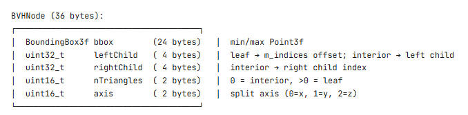
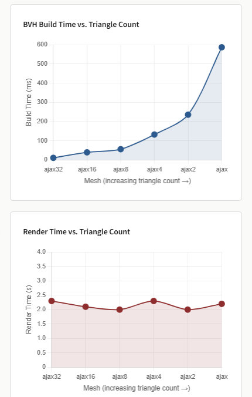
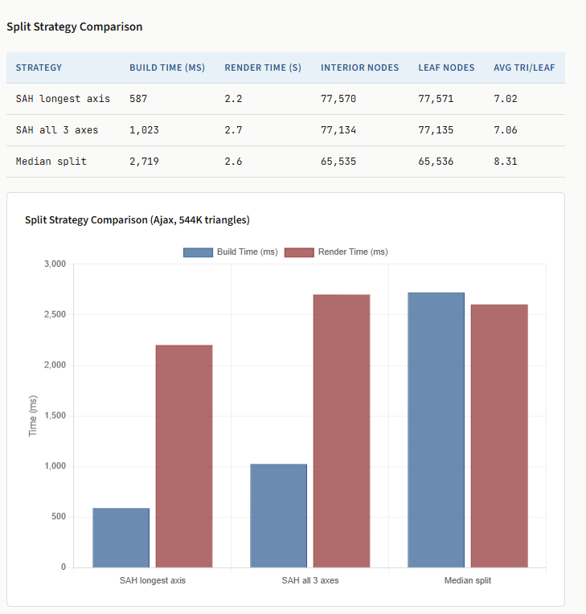

Note that it sums up to 36 bytes, this is because I implemented with TBB. Without tbb it's 32. - How do you choose a good split? A: I use SAH with binned approach as suggested. Along the longest axis of the node's bounding box, I divide the centroid range into 12 equally spaced bins. This number was just as per the assignment suggestion. And then each triangle is assigned to a bin based on its centroid position. We then evaluate the SAH cost C = S(A)·NA + S(B)·NB for each candidate split positions and select the one with the lowest cost. - What do you do if there is no good split? A: MY code checks if the best SAH split is >= cost of making the current set a leaf (this is the surface area of parent times triangle count), then the code just creates a leaf node. - Statistics for the Ajax scene: - Number of interior nodes - Number of leaf nodes - Average number of triangles per leaf node A: interor nodes : 77k, leaf nodes: 77k, average triangles/leaf: 7.02 Part 2: Ray Traversal ===================== I mean for the ray traversal it is iterative with fix-sized stack of 64 entries on the call stack. This avoids per-ray dynamic memory allocation as the assignment spec warns of. For each node visited, the code tests the ray against the node's bounding box using slab method (this was provided by bbox.rayIntersect). If the ray misses the box, the node and its corresponding substree is pruned. At the leaf node, we test the ray against each trianglke in the leaf. If a closer intersection is found, ray.maxt is updated, which automatically prunes future bounding boxes tests against more distant geometry. At interior nodes, both children are pushed onto the stack. The stack depth is 64 and more than sufficient for any practical BVH (a balanced tree over 544k triangles has depth -17) Part 3: Performance Evaluation ========================= In this section: - Report the rendering times for the original scene and compare them to those of the naïve implementation without BVH acceleration. The brute-force implementation was tested on the full Ajax scene. After 30+ minutes, the render had not completed. By contrast, the BVH implementation renders the same scene in 2.2 seconds, giving a speedup of at least 800×. Full stats for the BVH implementation rendering time is in a1/stats.html model/triangle time/rendering time/build time respectively. ajax32 16,336 2.3s 10.5 ajax16 32,672 2.1s 39.2 ajax8 68,070 2.0s 55.6 ajax4 136,140 2.3s 132.0 ajax2 272,282 2.0s 235.5 ajax 544,566 2.2s 586.8 - Provide plots showing the rendering time as a function of the number of triangles. - Provide plots comparing different BVH splitting strategies.

- Discuss your observations. (Without TBB parallelization) build time scales roughly linearly with the number of triangles, consistent with the expected O(n log n) complexity of the top-down SAH construction. Doubling the triangle count roughly doubles the build time. Render time is essentially constant at ~2.0–2.3s regardless of triangle count. This is the expected behavior with a BVH: each ray traverses O(log n) nodes, and since the total ray count is fixed, the per-ray cost barely changes as the tree grows deeper. The render time is dominated by the sheer number of rays and per-ray overhead rather than by the scene complexity. SAH with longest axis is the clear winner in both build time and render time. Evaluating all three axes (SAH all 3 axes) nearly doubles the build time with no meaningful improvement in tree quality; the longest axis heuristic already selects a good split direction for the vast majority of nodes. Median split is the slowest to build (2.7s) because it uses std::sort (O(n log n)) at each level rather than std::partition (O(n)). Its render time is also slightly worse because it doesn't optimize for surface area, leading to more bounding box overlap between siblings. Notably, it produces exactly 216 = 65,536 leaf nodes, reflecting the perfectly balanced binary tree that always splits at the midpoint. Make sure to mention the hardware specifications of the machine you used for testing. Component/Specification: CPU: Intel(R) Core(TM) i7-12800H (12th Gen) Logic Processors: 20 threads (14 Cores: 6 Performance, 8 Efficient) RAM: 16 GB DDR5 OS: Ubuntu 24.04.3 LTS (Noble Numbat) Virtualization: WSL2 (Microsoft Hypervisor) Parallel BVH construction with TBB ======================= This code is in src/accel.cpp. I parallelized BVH construction by having each subtree build into an isolated BVHBuildResult containing its own node and index arrays, so this eliminates shared mutable state between threads. At each interior node with more than 1024 triangles (I chose this number after testing a few values only oops, the intention was to balance parallelism and overhead), the left and right subtrees are dispatched concurrently via tbb::task_group; smaller subtrees build serially to avoid scheduling overhead. After both children complete, their arrays are merged with adjusted node pointers. The ray traversal code requires no changes since the final BVH layout is identical. On the full Ajax scene (544K triangles), build time dropped from 658ms to 168ms, which is a ~3.9× speedup while producing an identical BVH (same node counts, same average triangles per leaf). I think the speedup is below the machine's core count because the top levels of the tree are inherently serial and merging introduces some copy overhead. It may also be a skill issue and I should have done better. *This report template was borrowed from the CS440 course at EPFL.*